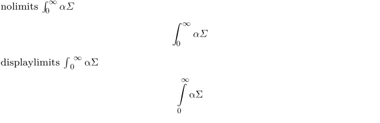

Syntax (autogenerated)
| \setupmathematics[...,...][...=...,...] | |
| [...,...] | name |
| openup | yes no |
| symbolset | name |
| functionstyle | style command |
| compact | yes no |
| align | l2r r2l righttoleft |
| bidi | yes no |
| sygreek | normal italic none |
| lcgreek | normal italic none |
| ucgreek | normal italic none |
| italics | 1 2 3 4 none reset |
| autopunctuation | yes no all comma yes,semicolon comma,semicolon all,semicolon |
| setups | name |
| domain | name reset |
| textstyle | style command |
| textcolor | color |
| functioncolor | color |
| integral | limits nolimits autolimits displaylimits none |
| stylealternative | name |
| default | normal italic |
| fraction | ams ctx |
| ampersand | normal |
| collapsing | 1 2 3 none reset |
| kernpairs | yes no |
Syntax
| \setupmathematics[...=...] | |||||||||
| autopunctuation |
|
||||||||
| lcgreek | italic normal -- font shape of lowercase greek letters | ||||||||
| ucgreek | italic normal -- font shape of uppercase greek letters | ||||||||
| sygreek | italic normal -- font shape of symbol characters such as \nabla, \partial, etc | ||||||||
| integral |
|
||||||||
Description
Global settings pertaining to the display of mathematics.
Example
Integrals and greek
This example illustrates integral, lcgreek, and ucgreek.
-
% mode=mkiv \setupmathematics [integral=nolimits, lcgreek=italic, ucgreek=italic,] nolimits \m{\int_0^\infty \alpha \Sigma} \startformula \int_0^\infty \alpha \Sigma \stopformula \setupmathematics [integral=displaylimits, lcgreek=normal, ucgreek=normal,] displaylimits \m{\int_0^\infty \alpha \Sigma} \startformula \int_0^\infty \alpha \Sigma \stopformula
- 
Symbolset
-
\startformula \reals {\mathbf R} \utfchar{"0211D} \utfchar{"1D411} \stopformula \setupmathematics [symbolset=blackboard-to-bold] \startformula \reals {\mathbf R} \utfchar{"0211D} \utfchar{"1D411} \stopformula
See also
Help from ConTeXt-Mailinglist/Forum
All issues with: